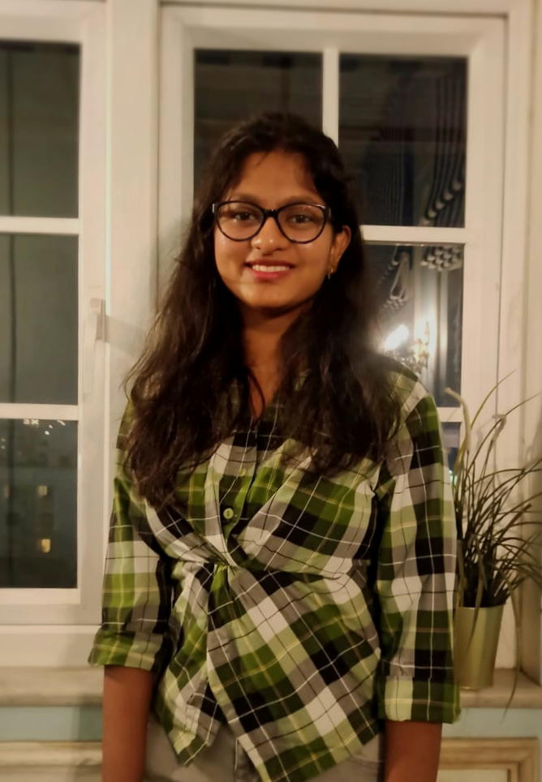

Ritika Anantwar

OBJECTIVE:
To succeed in an environment of growth and excellence that provides satisfaction
and self-development to help achieve personal as well as career goals.
EDUCATION:
-
Pursuing Bachelor of Technology in the branch of Computer Science and
Engineering from Yeshwantrao Chavan College of Engineering, Nagpur
-
Completed Higher Secondary Certificate (12th) from Yashoda Public School and
Junior College, Maharashtra State Board of Secondary and Higher
Secondary Education, Nagpur in the academic year 2020-2021
Percentage - 92.33%
-
Completed All India Secondary School Examination (10th) from Narayana Vidyalayam,
Central Board of Secondary Education, Nagpur in the academic year 2018-2019
Percentage - 96.8%
SKILLS:
Technical Skills:
- Basic knowledge of C, Java, Python and R languages
- Basic knowledge of HTML and CSS
- Designing softwares like Canva and Figma
- Basic knowledge of AutoCAD software
- Computer skills like Microsoft Word, Microsoft PowerPoint, Microsoft Excel etc.
Non-technical Skills:
- Communication
- Presentation skills
- Leadership
- Teamwork
- Problem Solving
- Critical thinking
CERTIFICATIONS:
-
R programming Course
Certificate link
-
Java Placement Course
Certificate link
-
Flutter and Dart Course
Certificate link
ACCOMPLISHMENTS:
- ACM Design Master in the Association for Computing Machinery (ACM) Student Chapter YCCE
- Designing Co-Head in IQ-BOTS, The Robotics Club of YCCE
- Database Management Co-Head in Action Committee of Eagles (ACE)
AWARDS:
- Attained 2nd rank in Odyssey quiz competition organised by Taaransh, The Astronomy Club of YCCE
My Hobbies
Contact Me